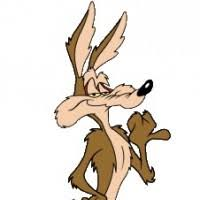

Kojot Vilda

Shrnutí
Neúnavný mravokárce řidičů překračujících maximální povolenou rychlost.
Vzdělání
- Škole života v Grand Canyonu (1949-současnost)
Zkušenosti
-
Série instruktážních videí pro řidiče
1949 - současnost
- Série 50 dílů zaměřených na metody snížení rychlosti pirátů silnic
-
Adventures of the Road Runner
1962
-
Looney Tunes: Back in Action
2003
- 91 minutový celovečerní film
Dovednosti
- Manuální zručnost
- Vynalézavost a schopnost řešit problémy
- Schopnost pracovat ve stesu
- Pyrotechnika
Ostatní